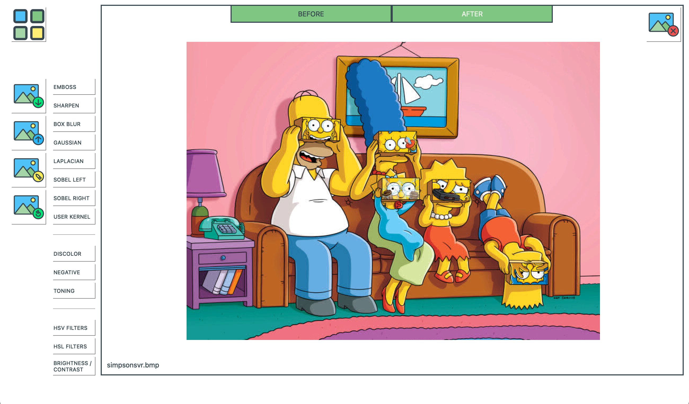
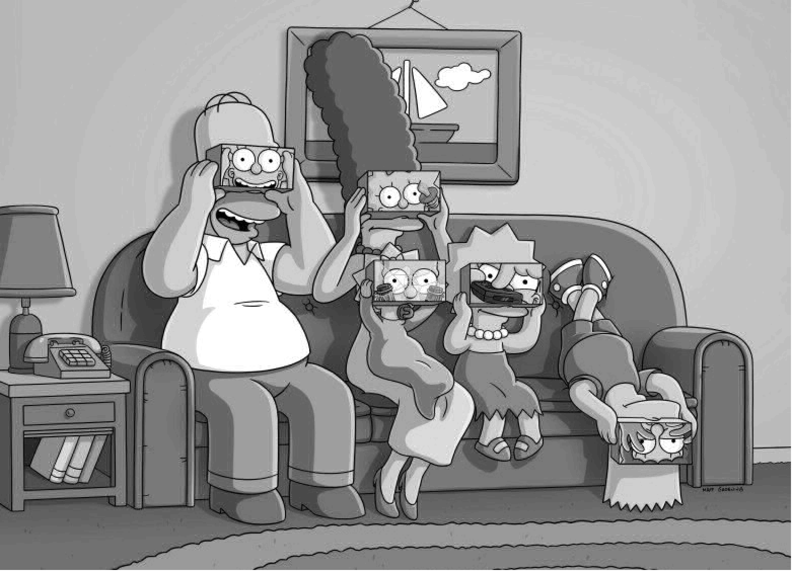
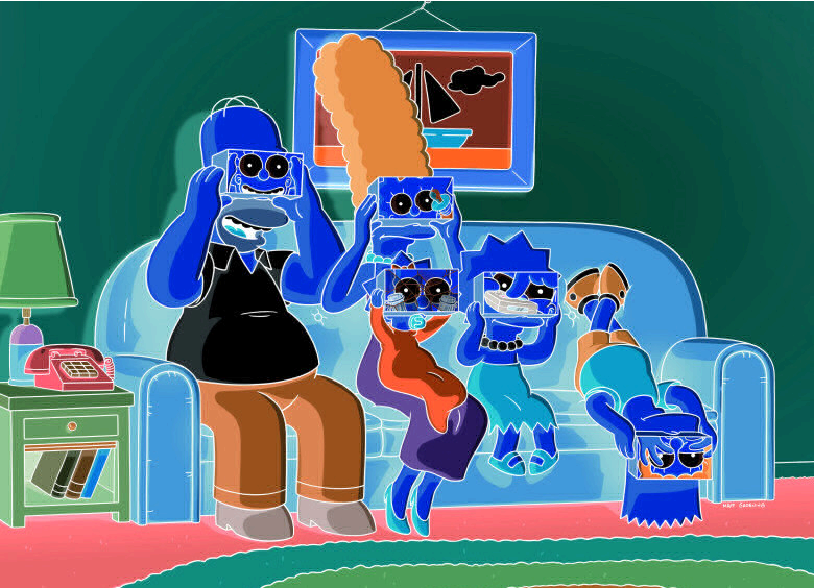
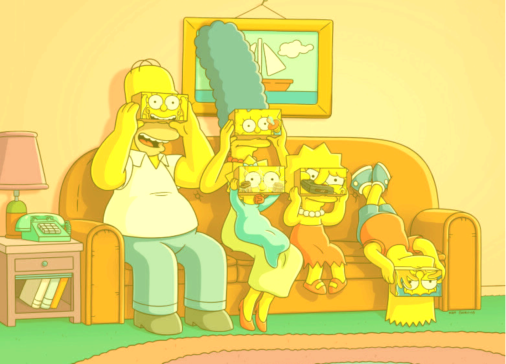
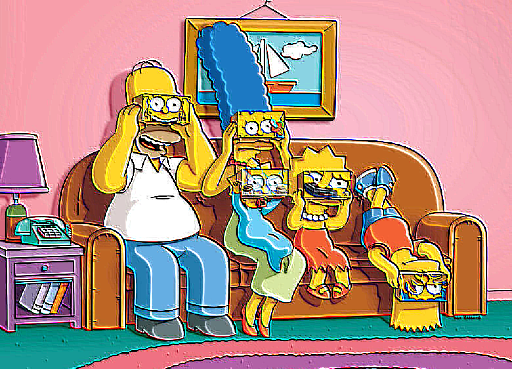
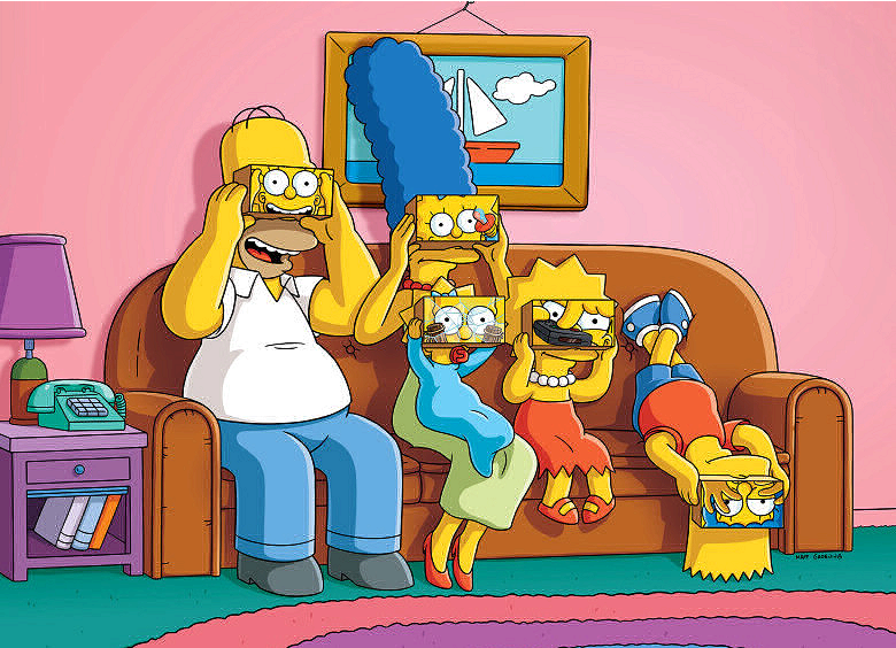
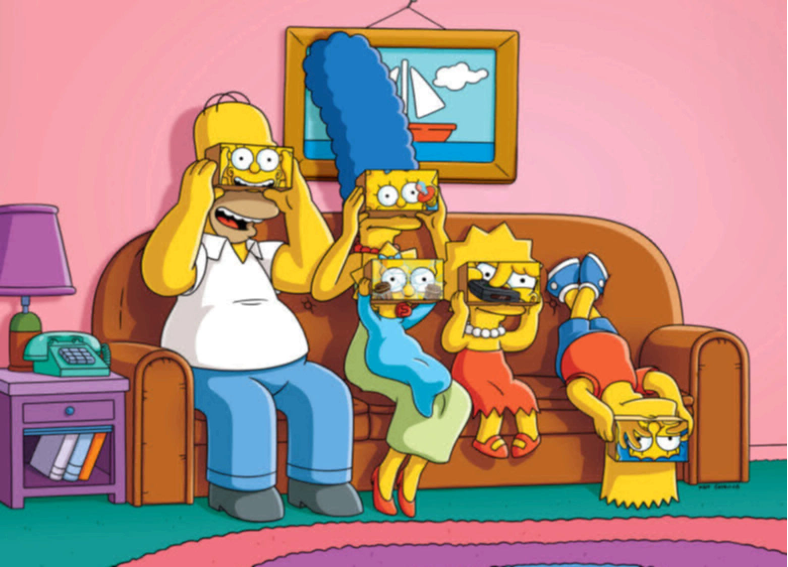
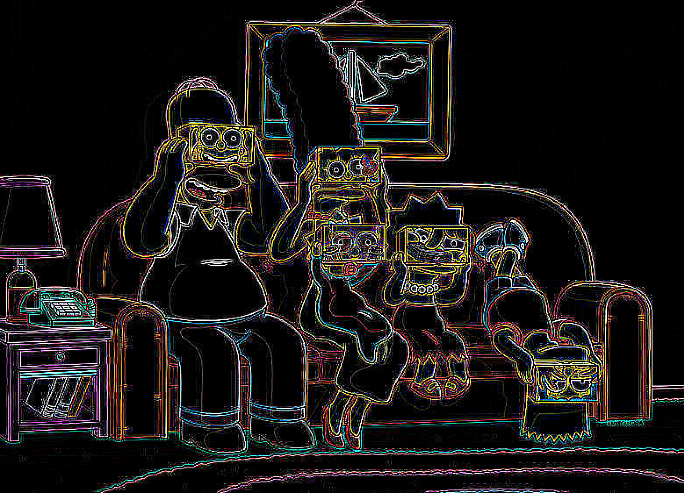
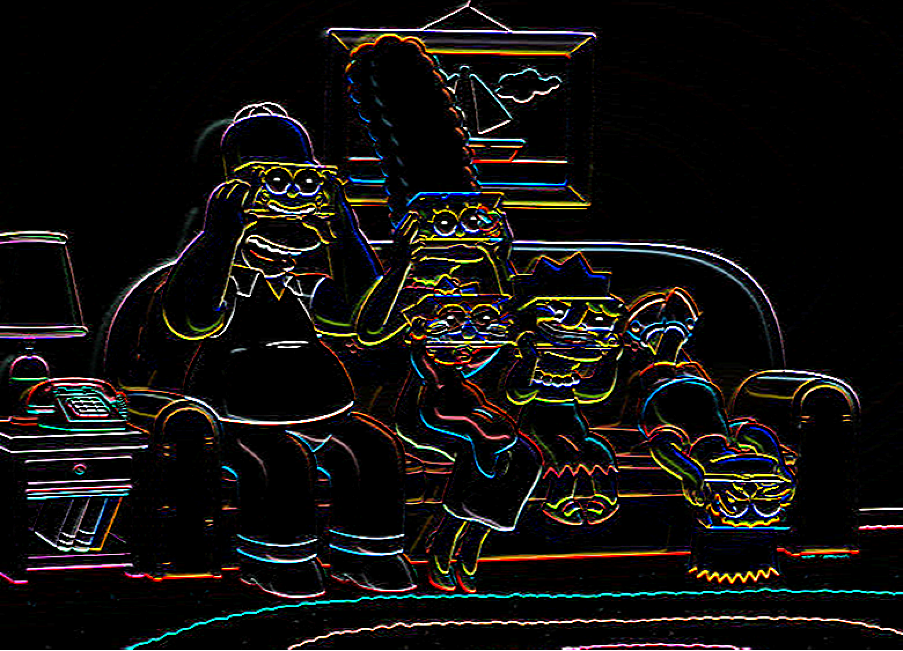
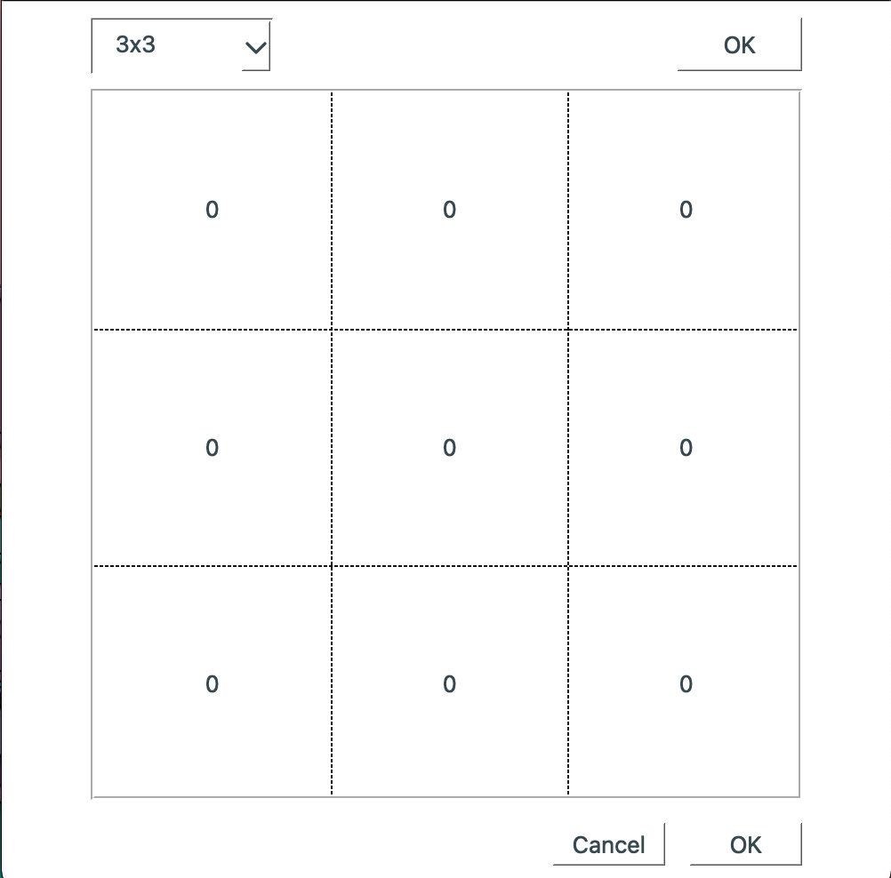

Реализация PhotoLab
Общая информация
Программа PhotoLab, позволяет накладывать различные фильтры свертки на изображение
Программа работает с файлами в формате .bmp
Простые фильтры

Обесцвечивание

Негатив

Тонирование
Фильтры свертки

Барельеф

Повышение резкости
Блочное размытие

Гауссово размытие

Фильтр Лапласа

Фильтр Собеля

Пользовательский фильтр свертки
Реализация цветокоррекции
Программа позволяет осуществлять изменение яркости и контрастности изображения
А также работу с насыщенностью для всего изображения (по моделям HSL и HSV)